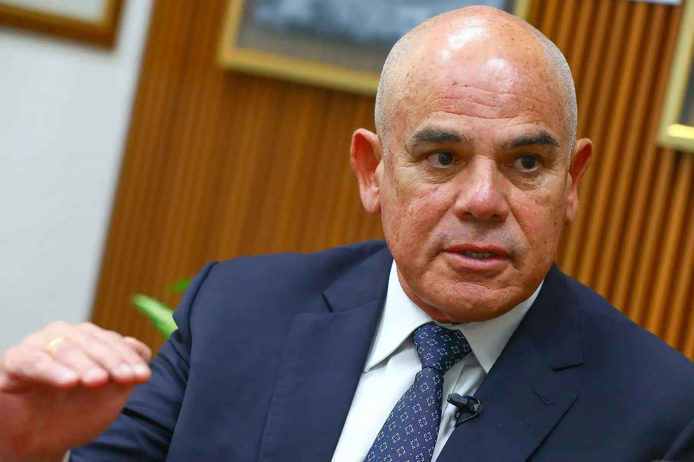

Ernesto Álvarez: Buscamos reformas profundas sin tinte político en sistema penitenciario

El ministro de Justicia y Derechos Humanos, Ernesto Álvarez, sostuvo de manera firme que el sistema penitenciario del país requiere con suma urgencia una reforma profunda y estructural que esté completamente desprovista de cualquier tinte político.
Durante sus recientes declaraciones públicas, la autoridad del Poder Ejecutivo abordó la compleja situación en la que se encuentran los establecimientos penitenciarios a nivel nacional, señalando que los problemas estructurales arrastrados durante décadas no pueden seguir resolviéndose mediante soluciones superficiales o coyunturales que responden a intereses partidarios temporales.
El titular del sector remarcó que el diseño, la planificación y la ejecución de estas medidas transformadoras deben basarse exclusivamente en criterios técnicos, presupuestales y operativos. De este modo, se busca garantizar que las políticas públicas aplicadas en las cárceles peruanas tengan sostenibilidad en el tiempo, independientemente de los cambios de gestión gubernamental.
La necesidad de un enfoque técnico y objetivo
El sistema penitenciario peruano enfrenta históricamente retos monumentales que van desde el hacinamiento crónico hasta las limitaciones logísticas y de seguridad en los recintos carcelarios. Ante este escenario, el ministro Ernesto Álvarez insistió en que politizar el debate sobre la seguridad penitenciaria y la administración de justicia solo obstaculiza el camino hacia soluciones reales y duraderas.
La postura del Ministerio de Justicia y Derechos Humanos apunta a consolidar un espacio de trabajo colaborativo y riguroso, donde participen especialistas en materia penal, criminología, administración pública y derechos humanos. El objetivo central es transformar las instituciones penitenciarias en espacios que realmente cumplan con su mandato constitucional de reeducación, rehabilitación y efectiva reinserción social de los internos.
“El sistema penitenciario del país requiere una reforma profunda sin tintes políticos.” — Ernesto Álvarez, ministro de Justicia y Derechos Humanos.
Compromiso institucional y perspectivas a futuro
La autoridad ministerial reiteró que el Ejecutivo mantiene un firme compromiso con la mejora de las condiciones en el sistema carcelario, reconociendo que la seguridad ciudadana externa está estrechamente vinculada al control y la correcta gestión dentro de las prisiones. Las reformas planteadas buscan ordenar los procesos internos, optimizar el uso de los recursos del Estado y combatir de manera frontal los focos de corrupción que afectan el normal funcionamiento de las dependencias penitenciarias.
Asimismo, se destacó que cualquier propuesta legislativa o administrativa que surja desde el ministerio estará fundamentada en diagnósticos precisos y realistas, evitando medidas populistas que no cuenten con sustento técnico. Con esta directriz, el sector busca sentar las bases de una política penitenciaria de Estado que trascienda los periodos gubernamentales y atienda con eficacia una de las problemáticas más sensibles de la agenda nacional.